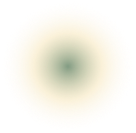

In the hallway there is a mirror which faithfully duplicates all appearances. Men usually infer from this mirror that the Library is not infinite (if it were, why this illusory duplication?); I prefer to dream that its polished surfaces represent and promise the infinite...
In the hallway there is a mirror which faithfully duplicates all appearances. Men usually infer from this mirror that the Library is not infinite (if it were, why this illusory duplication?); I prefer to dream that its polished surfaces represent and promise the infinite...
Light is provided by some spherical fruit which bear the name of lamps. There are two, transversally placed, in each hexagon. The light they emit is insufficient, incessant.